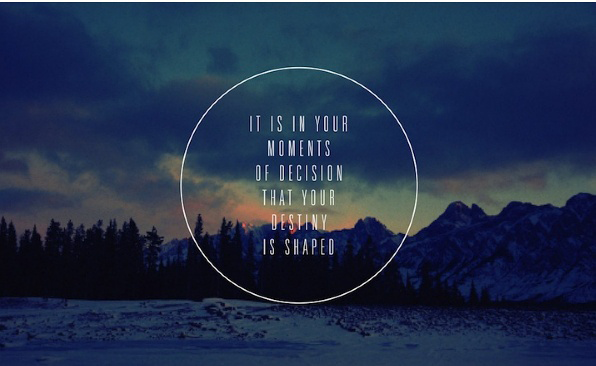
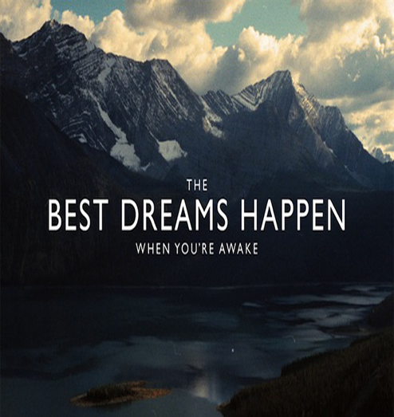
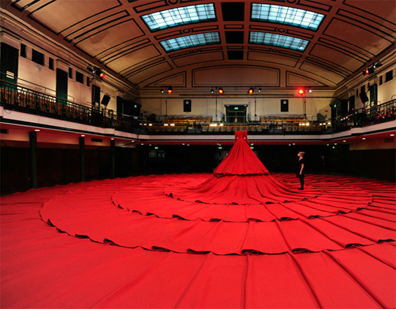

Barry像个手艺人一样生活
999人预览
2017-02-02

缘于2006年的中国之行，新西兰人Barry的人生轨迹就此改变。慢火车把Barry的脚步从大城市拉到西安，再到湖南、江西、云南、贵州……贵阳博物馆最终又把他的目光拽到了凯里：黔东南苗侗族自治市，苗族刺绣的重镇。演员世家出身的Kevin Barry Radford做过百老汇歌剧的职业演员，从事过家居设计和欧洲古董家具收藏。精瘦、低调，喜欢穿着素色麻质衣服的BARRY如今的注意力专注在令他惊叹不已的苗绣上。
凯里街头充斥着各种各样的小商贩，人们蜂拥而上吆喝着买卖。尽管鱼龙混杂，最初的冲击力却来自纯视觉，没有故事、没有历史、没有文化差异，仅仅出于天然对色彩的敏感，让Barry陷入了“激情”。
“它们太美了！当地的花儿和动物，天然的色彩，看起来如此自然、完美。凯里人过着简单的生活，她们看待世界的方式却是如此抽象和自由，这些女人不懂绘画，而是用丝和线在表达着自己，这是绝对的艺术。”
。杨姐与众不同，这个土生土长的苗族妇女是个民间高手、杰出的天才设计师，没受过教育，却充满热情地做着从老一辈手里传承下来的蜡染和刺绣工艺。杨姐理解了Barry，喜欢上他的真诚，成为他在凯里最好的向导以及合作伙伴。
Barry和凯里人彼此日渐靠近，向他介绍自己的家人，请他到家里吃饭，参加村里的婚嫁丧娶，过新年……“让我震撼的是，他们对我毫无保留地慷慨大方，绝无所图，我在这里体验到的是日常生活的一部分。少数民族的文化就是每一天，而不仅仅是他们的穿着、食物。”

很长一段时间，Barry的形象是这样的：塞进拥挤不堪的乡间面包车，在崎岖的山路颠簸，祈祷着“哦，上帝保佑千万别出车祸”；在乡间流动的集市晃悠，跟手艺人搭讪，尾随他们回家；扛着农民工进城打工的编织袋，从凯里坐火车去北京，袋子里装着手绣的布样—他的“宝贝”……9年之间，他看过上万幅作品，300余幅为其收藏。
“苗绣已经远远超出其本身的意义，它演变为苗族妇女对祖先，对诸神、部落和宗教的炙热感情—这里有她的故事，她的童年和婚姻，她的孩子，她的希望，她的爱、恐惧和梦想。”你很难想象这些话出自一个迄今不懂中文的外国人，用韩超的话说：“Barry是把中国文化背在自己的肩上了，他越来越像一个中国人。”
直到遇见“八仙过海”的主人。一个贵州普通妇女，将家传明清时期的这幅刺绣要卖给Barry时，她哭了。Barry感到惶恐：“你不必卖给我，可以继续保留它。”但妇人执意要卖，因为她的孙子要结婚，需要这笔钱。
Barry开始了思考：“我不能只是收藏，这样下去到底能收藏多少幅？这些东西将来会怎么样？我只是给他们带来了非常短期的利益，怎么才能找到一种方式去保持这种工艺？”
山村寻访的生活让Barry看到，村里的年轻人对刺绣毫无兴趣，正在老去的母亲和奶奶们从事的传统手工和年轻人的生活毫不相干，有的家庭甚至因为没有继承人，现在手里的活计将成为最后一件。中国，正在失去最美的文化和手艺。

2012年，Barry在北京、上海、悉尼、东京举办了中国少数民族古董刺绣展，反响异常热烈。在西方，许多人看到刺绣作品本身所述说的无尽之意以及古老东方的热情后，会要求Barry带他们去偏远的少数民族村子，去看那些妇女如何用古老的方式工作。
但一切仅仅是分享远远不够。这一切也不仅仅与利益和金钱相关。需要寻找一条道路，让古老的工艺能够继续传承。
“如果你想保存一个艺术品，那么建立一个博物馆就好了。许多NGO（非政府组织），还有政府，已经在做这样的事情。
如果你想买一件5000年前的东西，你可以买下来束之高阁，但和当下没关系，有多少人愿意这样做呢？市场并非博物馆，如果你想卖出产品，就必须和今天的生活息息相关。”
言谈中的Barry深沉而富有理性，缺少所谓艺术家的疯狂，有着对商业和市场的敏感。唯有展开一幅珍藏的苗绣，他才会突然迸发出无法掩饰的激情，谈起艺术保护与文化侵权，甚至还流露出鲜有的激动与固执，这让他自身新西兰民族的秉性一览无遗。“苗绣是中国的文化，没有人能够占有它并廉价地出卖它”。
Barry不理解人们对于千篇一律的奢侈品的追逐，也看到乡村的年轻人为了追求温饱背井离乡，在都市过着朝九晚五，失去梦想的生活。他建立了自己的工作室，把新的创意带回了凯里，一点点说服当地的手作人，用传统工艺创造出小众、独特、奢侈的产品。这份“奢侈”，源自时间的沉淀。
工作室提供了一种可能性，让年轻人看到一种不一样的选择：留在自己生长的地方，有山、有水、有干净的空气，和家人在一起，继承传统的手工艺和文化，用新的设计创造新的产品，而这样的产品为时代以及时尚所需求。
“对我个人来说，只要有一点点机会和希望就好了。我并不想开工厂，那会改变凯里这样乡村的生活，工厂会让人们忙碌，失去自由。而历史却是，人们生活着，有生老病死，有婚礼、有葬礼，女人们在非常繁忙的日常生活中完成了这些作品。这样的作品是我们对于时间的理解，它值得人们花成倍的价钱去拥有、去使用。”人与技艺相互扶持，随岁月融合相伴，这是一个外国人对中国传统手作产生的敬意。
在艺术园区这样一个创意泛滥成灾的地方，创意总监Barry却是一个脚踏实地的现实主义者。为执着所驱动，但并不理想化，他像那些手工艺人，认真、敬业，赋予着平凡生活以一针一线的热忱注脚。
当我们还在闲聊时，Barry开始收起那幅八仙过海的长卷苗绣。他单膝跪在地上，先在上面铺上一层绵纸，再悉心地卷起来。我们问他是否需要帮忙，他笑着拒绝了。工作室里的天窗洒下的最后一抹余晖正在消失，Barry表情平和、谦卑，此时他全然不是一个拥有300余幅珍贵苗绣的宝物拥有者，也不是一个经营高级定制奢侈品牌的商人，而像是这些艺术品的侍从、追随者，一个虔诚的信徒。